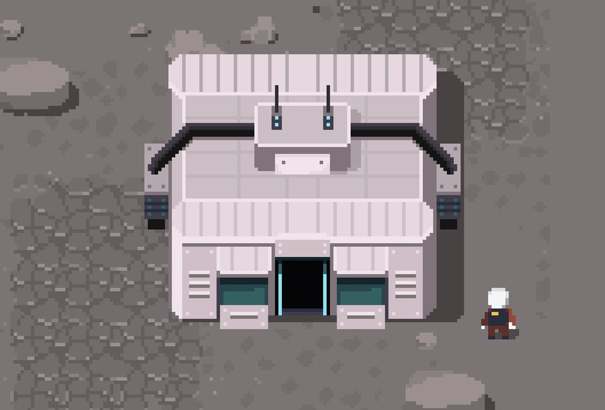
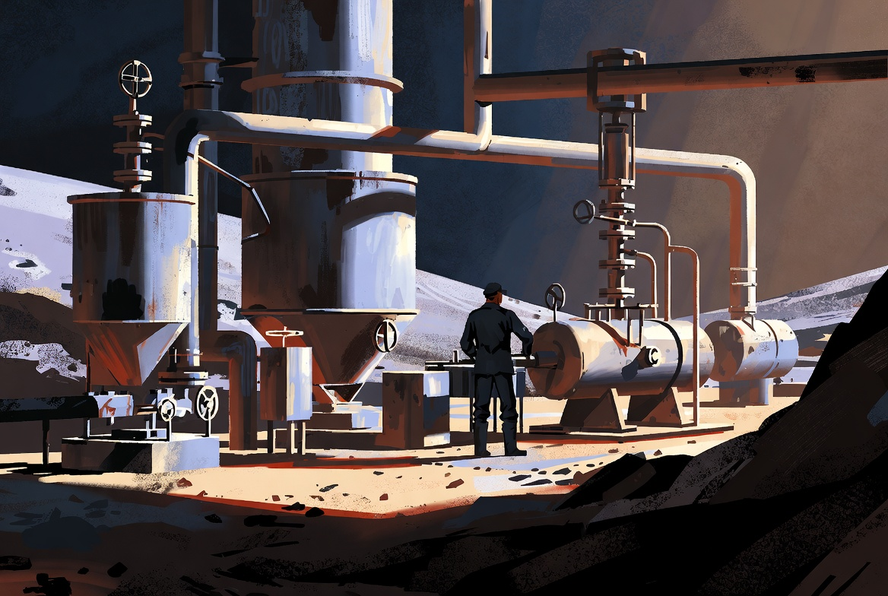
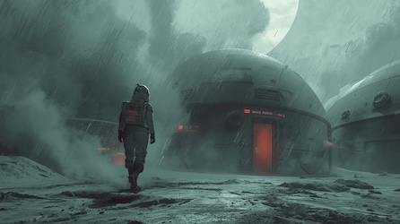

Project Moon: Colony Management Prototype on itch.io
By Redshift Labs / 5. January 2026 / No Comments

Project Moon (working title) is an early prototype colony management RTS where players build and maintain a Soviet lunar base. Currently available for playtesting on itch.io, the game is being developed by solo indie developer at Redshift Labs with valuable feedback from a small group of dedicated playtesters.
Grateful for Early Support
"I'm incredibly grateful to the friends who have playtested and given valuable feedback," shares the developer. "Their insights have been instrumental in shaping the core mechanics and identifying what makes the game fun versus what feels like busywork."
The feedback from early playtesters has helped refine critical systems like oxygen management, food production, and power distribution, turning what could have been overwhelming complexity into engaging strategic decisions.
A Focused Approach
Rather than building an expansive procedural world, the developer is taking a more focused approach inspired by games like Into the Breach:
- One map with biome zones - A handcrafted lunar landscape with distinct regions offering different strategic opportunities and challenges
- Three starting scenarios - Different initial conditions and objectives that dramatically change how you approach the game
- Fog of war exploration - Players must venture out to discover resources, hazards, and opportunities across the lunar surface
- Optional quests - Side objectives that provide rewards and unlock new capabilities without forcing a linear progression

This approach mirrors how Into the Breach keeps one island type but randomizes enemy placement and objectives. By focusing depth over breadth, the developer aims to create a tightly designed experience where every playthrough feels fresh without sacrificing the polish that comes from handcrafted content.
Core Survival Mechanics
The prototype already features several compelling survival systems:
- Oxygen Management: Room-based oxygen systems where sealed structures maintain breathable air while breaches can be deadly
- Food Production: Stronghold-style food mechanics where colonists share from a central stockpile
- Power Systems: Solar panels must be carefully positioned, with battery banks required to survive the lunar night
- Individual Colonist Stats: Each unit tracks hunger, health, and morale, creating emergent stories of survival and failure

Try It Yourself
The current prototype is rough around the edges but showcases the core gameplay loop. It's available now on itch.io for anyone interested in providing feedback or just experiencing what Soviet lunar colony management feels like.
Development continues with regular updates documented on the official devlog, where the developer shares technical challenges, design decisions, and progress toward a more complete experience.
Play the Prototype
Try out the current prototype and see what Project Moon has to offer. Your feedback helps shape the game!
Play Prototype on itch.io